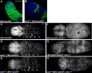
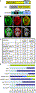
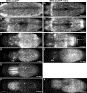
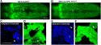
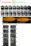
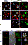
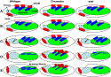

|
|
||||
|
|
Developmental Biology
Article in Press, Corrected Proof - Note to users |
Result list | previous < 1 of 1 > next |
| ||||
|
EAST and Chromator control the destruction and remodeling of muscles during Drosophila metamorphosis
Martin Wassera, c,  ,
,  , Zalina Bte Osmanb and William Chiac, d
, Zalina Bte Osmanb and William Chiac, d
aBioinformatics Institute, Department of Imaging Informatics, Republic of Singapore
bFaculty of Medicine, Dentistry and Health Sciences, Department of Anatomy and Cell Biology, University of Melbourne, Australia
cTemasek Life Sciences Laboratory, 1 Research Link, National University of Singapore, Republic of Singapore
dDepartment of Biological Sciences, National University of Singapore, Republic of Singapore
Received 19 February 2007; revised 30 April 2007; accepted 1 May 2007. Available online 8 May 2007.
Abstract
Metamorphosis involves the destruction of larval, the formation of adult and the transformation of larval into adult tissues. In this study, we demonstrate the role of the Drosophila nuclear proteins EAST and Chromator in tissue destruction and remodeling. To better understand the function of east, we performed a yeast two-hybrid screen and identified the euchromatin associated protein Chromator as a candidate interactor. To analyze the functional significance of our two-hybrid data, we generated a set of novel pupal lethal Chro alleles by P-element excision. The pupal lethal Chro mutants resemble lethal east alleles as homozygous mutants develop into pharates with normal looking body parts, but fail to eclose. The eclosion defect of the Chro alleles is rescued in an east heterozygous background, indicating antagonistic genetic interactions between the two genes. Live cell imaging was applied to study muscle development during metamorphosis. Consistent with the eclosion defects, mutant pharates of both genes show loss and abnormal differentiation of adult eclosion muscles. The two genes have opposite effects on the destruction of larval muscles in metamorphosis. While Chro mutants show incomplete histolysis, muscles degenerate prematurely in east mutants. Moreover east mutants affect the remodeling of abdominal larval muscles into adult eclosion muscles. During this process, loss of east interferes with the spatial coordination of thinning of the larval muscles. Overexpression of EAST-GFP can prevent the disintegration of polytene chromosomes during programmed cell death.
We propose that Chro activates and east inhibits processes and genes involved in tissue destruction and remodeling.
Keywords: East; Chromator; Metamorphosis; Muscle development; Apoptosis; Remodeling; Yeast two-hybrid
Abbreviations: Chro, Chromator; GFP, green fluorescent protein; APF, after puparium formation; PPT, prepupal–pupal transition; MHC, myosin heavy chain; DEOM, dorsal external oblique muscle; DIOM, dorsal internal oblique muscle; TDIOM, temporary dorsal internal oblique muscle
Article Outline
Introduction
Metamorphosis is a process during which the larva is transformed into an adult fly (Bodenstein, 1965). Most of the transformation processes occur in the stationary puparium and last about 3 to 4 days. Puparium formation converts the 3rd instar larva into the immobile prepupa. About 12 h into the prepupal stage, muscular contractions cause the abdomen to retract towards the posterior end, thus creating a space for the imaginal head and thorax in the anterior part of the puparium. The force generated by the muscle contractions helps the head structures to evert from underneath the thorax. This prepupal to pupal transition (PPT) establishes the adult body plan (Lam et al., 1999). The steroid hormone ecdysone acts as a master switch of these postembryonic developmental transitions and triggers both puparium formation and head eversion (Thummel, 1996). About 3 days after pupation, the formation of adult tissues and organs comes to completion and the adult fly ecloses from the puparium.
Metamorphosis involves the coordination of three ecdysone dependent developmental programs: (1) the destruction of obsolete larval tissues, (2) the proliferation of imaginal precursor cells and their differentiation into adult tissues and (3) the remodeling of larval into adult tissues. The histolysis of larval tissues is predominantly achieved via autophagic programmed cell death, which is regulated by a two-step transcriptional hierarchy (Baehrecke, 2003). In the first step, the ecdysone receptor complex activates the transcription factors BR-C, E74A and E93, which then turn on genes involved in apoptosis, autophagy, cytoskeletal reorganization and proteolysis.
Various larval tissues are remodeled to perform additional functions during metamorphosis or in adult flies. The tracheal system undergoes pruning or elimination of individual branches (Whitten, 1980). In the nervous system, neurons of the mushroom body, the olfactory system and peripheral sensory organs show pruning of axons or dendrites, resulting in alterations of their connections and branching patterns ([Kuo et al., 2005], [Lee et al., 2000] and [Marin et al., 2005]). The rewiring of the neurons involves components of the ecdysone signaling pathway, metalloproteases and the ubiquitin proteasome system. Fat-body remodeling in pupae involves the dissociation into individual fat cells which are later removed by cell death in young adults (Nelliot et al., 2006).
In the muscular system, subsets of larval muscles survive and perform new functions. A well studied case are the larval internal dorsal oblique muscles that escape histolysis and are subsequently remodeled to serve as templates for the morphogenesis of the indirect adult flight muscles ([Dutta et al., 2002], [Fernandes et al., 1991] and [Roy and VijayRaghavan, 1998]). Another example is found in the abdomen where most larval muscle undergo cell death and are replaced by adult muscles that are formed de novo from pools of myoblasts present in the larva ([Currie and Bate, 1991] and [Dutta et al., 2005]). The abdominal intersegmental muscles persist and are later transformed into the temporary dorsal oblique muscles of the adult, which are required for eclosion. These muscles degenerate soon after the adult has emerged (Kimura and Truman, 1990).
Much of our knowledge on cell remodeling and its functional significance is derived from pioneering work on the metamorphosis of the motor and neuronal systems in the sphinx moth Manduca sexta ([Consoulas et al., 2000], [Hildebrand et al., 1997] and [Weeks and Levine, 1990]). Numerous larval neurons persist into adulthood and undergo changes in dendritic morphology and biophysical properties that facilitate the switch from larval to adult behavior.
The nuclear matrix as an internal non-chromosomal scaffold of the cell nucleus remains a controversial concept in eukaryotic cell biology (Pederson, 2000). It is poorly defined in terms of composition, function and subcellular localization. The EAST protein of Drosophila is a candidate component of an internal nuclear skeleton as it localizes to non-chromosomal regions and its overexpression can influence the size of this sub-nuclear domain (Wasser and Chia, 2000). A recent study demonstrated that EAST is found in the same protein complex as Megator (Mtor), a component of the nuclear pore complex and an ortholog of the mammalian TPR (Qi et al., 2005). EAST and Mtor colocalize to another controversial structure called the spindle matrix (Wells, 2001). Assembled from mainly nuclear proteins at prophase, the spindle matrix resembles a microtubule spindle. However, unlike microtubules, this structure is not destabilized by treatments that depolymerize microtubules. Hence the spindle matrix has been proposed to direct the formation of the bipolar mitotic spindle apparatus. Other potential components of the Drosophila spindle matrix include the nuclear proteins Chromator (Chro) and Skeletor that bind to the interbands of polytene chromosomes ([Qi et al., 2004] and [Walker et al., 2000]). Chro, also called Chriz (Gortchakov et al., 2005), can interact with both Skeletor and Mtor. Interfering with the function of Chro, Skeletor and east has been shown to lead to defects in mitosis and meiosis ([Rath et al., 2004], [Walker et al., 2000] and [Wasser and Chia, 2003]). The abundance of these four mentioned spindle matrix proteins in nuclei of postmitotic cells strongly suggests a vital function in interphase nuclei. Consistent with this expression, mutations in Chro affect the structure and organization of larval polytene chromosomes (Rath et al., 2006). Mtor, Chro and Z4, an interactor of Chro, associate with a dosage compensation complex, indicating a role in transcriptional regulation (Mendjan et al., 2006).
In this report, we demonstrate the developmental functions of east and Chromator. We link the two genes by way of physical interactions of their protein products in the yeast two-hybrid system and genetic interactions between their mutations. Using live imaging, we show that these two genes have antagonistic roles in the destruction and remodeling of muscles during metamorphosis. Chro acts to promote the histolysis of larval muscles during metamorphosis. Conversely, east inhibits muscle destruction. Thus together they spatially and temporally coordinate the degradation of muscle mass during apoptosis and tissue remodeling.
Drosophila stocks
The east alleles used have been previously described ([VijayRaghavan et al., 1992] and [Wasser and Chia, 2000]). Canton-S (CS) was used as a wild-type strain. The UAS-GAL4 system (Brand and Perrimon, 1993) was used for salivary gland expression of transgenes. The effector construct lines UAS-eastFL-GFP and UAS-eastΔC-GFP have been described (Wasser and Chia, 2003). The salivary gland-specific GAL4 driver lines ftz-GAL4 and smid-GAL4 (Long et al., 1998) were provided by C. Doe and D. Shepherd, respectively. The muscle-specific reporter gene MHC-tauGFP has been previously described (Chen and Olson, 2001). The P{SUPor-P} transposon insertions ([Bellen et al., 2004] and [Roseman et al., 1995]) y1;P{y+mDint2 wBR.E.BR = SUPor-P}KG3258 ry506/TM3,Sb1Ser1 (ChroKG3258) and y1;P{SUPor-P}KG6256 ry506/TM3, Sb1 Ser1 (KG6256) were obtained from the Bloomington Drosophila stock center.
Immunocytochemistry
Antibody staining of whole-mount 3rd instar larval salivary glands was carried out as previously described (Wasser and Chia, 2000). Pupae were dissected in fixative containing 2% formaldehyde, 0.1% glutaraldehyde in PBS, transferred to a plastic tube containing the fixative and fixed for 15 min. Antibody staining of salivary glands and muscles was performed in the same manner as larval salivary glands. Alternatively, to improve antibody penetration, muscles expressing MHC-tauGFP or salivary glands expressing east-GFP were separated from the remaining tissues, squashed onto frosted microscope slides in a drop of PBS and attached to the slides by snap freezing. Incubation of the primary and secondary antibodies was carried out for 2 h each. We used the following primary antibodies: mouse monoclonal anti-Chromator 6H11 (1:100, Kristen Johansen), rabbit anti cleaved Caspase-3 (1:150, Cell Signaling), anti Drosophila lamin Dm0 (1:50, Developmental Studies Hybridoma bank, Paul Fisher) and rabbit anti myosin heavy chain (MHC, Dan Kiehart). Secondary immunofluorescence detection was carried out using Cy3-conjugated goat anti-mouse or anti-rabbit antibodies (Jackson ImmunoResearch). Filamentous actin was visualized using TRITC-phalloidin (1:1000, Sigma) and DNA using TOPRO3 (1:5000, Molecular probes). Images of fluorescently labeled samples were acquired by laser scanning confocal microscopy using the Zeiss LSM 510 Meta or Zeiss LSM 510 upright microscopes. Image processing was carried out using Adobe Photoshop, Zeiss LSM 5 image browser and Metamorph (Molecular Devices).
Live imaging of pupal muscle development
White pupae expressing MHC-tauGFP were collected using a wet brush, transferred to a Petri dish and, oriented with the dorsal side facing up, incubated in a wet chamber at 25 °C. Live imaging of the dorsal muscles was carried on a Zeiss Axioplan 2 microscope system with a 5× lens. Image acquisition by the Photometrix Coolsnap HQ or Nikon DXM 1200F digital cameras was controlled using the Metamorph (Molecular Devices) software. The source of illumination was a mercury lamp. Time-lapse recording was carried out at 1 or 5 min intervals for up to 78 h.
Yeast two-hybrid protein interaction screen
The screen for interacting proteins of EAST was carried out using the Matchmaker Yeast Two-Hyrbid system 3 (Clontech) according to the manufacturer's protocol. The cDNA fragment corresponding to the C-terminal residues 1535–2301 of EAST was fused in frame to the sequence corresponding to the DNA binding region of GAL4 in the bait vector pGBKT7. The GAL4-EAST bait was used to screen cDNA expression library constructed from 0 to 20 h embryos which was cloned into the prey vector pACT2 (Steven Elledge, Harvard Medical School). We screened an estimated number of 2,600,000 double transformants of the Yeast host strain AH109 and identified 11 independent prey clones containing sequences corresponding to C-terminal regions of Chromator. The longest clone corresponded to residues 430–926, the shortest one to residues 603–926. Deletion mapping was used to narrow down the Chromator interacting domain in EAST to residues 1965–2143. Domain swapping by cloning DNA corresponding to Chro residues 430–927 into pGBKT7 and EAST residues 1965–2301 into pGADT7 confirmed the protein-protein interaction.
Generation of Chro alleles
The P{SUPor-P} transposon insertion ChroKG3258 is a lethal loss-of-function allele of the Chro gene ([Gortchakov et al., 2005] and [Rath et al., 2004]). Precise excisions restore viability. Most ChroKG3258 homozygotes die as embryos. To generate new excision alleles, ChroKG3258 females were crossed to males of the transposase stock w;Δ2-3Sb/TM3,Ser1 (Robertson et al., 1988). One hundred thirty-five independent white-eyed excision lines were balanced over the TM6B, Tb, Hu, assayed for lethality and tested for complementation with ChroKG3258 and KG6256. KG6256, which genetically complements ChroKG3258, is a lethal insertion 38 bp upstream of the first Chro transcription start site, while ChroKG3258 is inserted in the first intron 30 bp upstream of the second transcription start site, indicating that KG6256 affects a gene other than Chro. A likely candidate is Ssl1. We recovered 18 lethal white-eyed P-element excisions that fail to complement ChroKG3258. Of these, 4 also fail to complement KG6256. Among the 14 that complement KG6256, 5 lines reach pupariation while the remaining 9 die as third instar larvae or earlier. In this study, we used 4 excisions that complement KG6256 in terms of viability and fertility: the pupal (pharate) lethal excisions Chro17a, Chro60a and Chro109c and the embryonic lethal line Chro8c. The lethal Chro alleles were balanced over TM6B TB to identify homozygous larvae and pupae. PCR analysis of genomic DNA showed that the 3 pupal lethal lines contain internal deletions in the transposon that leave the flanking genomic regions intact. One hundred seventeen of the 135 white-eyed excision lines were viable, confirming previous reports ([Gortchakov et al., 2005] and [Rath et al., 2004]) that the P-element causes the ChroKG3258 phenotype.
In addition, we used one viable excision allele Chro1a that complemented ChroKG3258. Double homozygosity of su(wsp)1 and Chro1a results in a synthetic flightless phenotype. The assumption that Chro1a is a viable Chro allele is based on the observation that su(wsp);Chro1a/Chro8c flies are semi-lethal, with 81% of animals dying as pharate adults and 19% eclosing to become flightless and sterile adults. In contrast, su(wsp)1;Chro8c/TM6B Tb and su(wsp)1;Chro1a/TM6B Tb animals become fertile adults that are able to fly.
The east gene is required for adult muscle development
east mutants develop into pharates that show no discernible abnormalities of their external morphology but fail to emerge from their pupal case. We had earlier noticed that the tips of the testes in easthop7 hemizygotes show a bulging appearance compared to the more pointed shape in wild-type. Staining with anti-myosin heavy chain (MHC) antibody (not shown) or with an MHC promoter driven tauGFP reporter gene (MHC-tauGFP) revealed that the visceral muscles wrapped around wild-type testes (Fig. 1A) become shattered in east mutants (Fig. 1B). We next examined the morphology of the prominent temporary dorsal internal oblique muscles (TDIOM) in the abdomen of pharates. The TDIOMS are used for eclosion and degenerate after emergence of the adult (Miller et al., 1965). The nomenclature of the muscles is according to (Crossley, 1978). TDIOMs in easthop7 mutants were either absent or showed various morphological irregularities in size and shape. While wild-type muscles appear broad and straight (Fig. 1C), their mutant counterparts appear thinner or wedge shaped (Fig. 1D). In addition, mutant muscles show abnormalities in terms of location and orientation. Often, adjacent muscles become fused (Fig. 1 and Fig. 5). Out of 68 easthop7 mutants scored, 18 or 26% developed into pharates. Animals were classified as pharates when we could observe bristles and cuticle pigmentation. Out of the 18 pharates, 16 or 89% showed one or more of these defects.
 Display Full Size version of this image (86K) Fig. 1. Mutations in east and Chro interfere with the differentiation of adult muscles. Muscles of pharate adults were labeled with MHC-tauGFP. Compared to controls (A), testis muscles (green) of easthop7 (B) pharate adults are ruptured causing the tip of the testis to bulge out. DNA in panels A and B were stained with TOPRO3 (blue). (C–H) Dorsal views of live pharate adults. The MHC-tauGFP reporter (white) labels the temporary dorsal internal oblique muscles (TDIOM) of abdominal segments I to V and the indirect flight muscles (IFM in panel C) of the thorax. (C) Pattern of TDIOMs in a control pharate adult. Individual TDIOMs in segments II and III are indicated (#, arrow, arrowhead). (D, E) easthop7 mutants display various defects including missing (# in panel D) and morphologically abnormal muscles in terms of size (arrow in panel D) and shape (arrowhead in panel E). Other defects include abnormal orientations (arrow in panel E) and fused muscles (* in panel E). (F) Chro mutants display absent or malformed abdominal musculature (arrow). Their abdomens are filled with MHC-tauGFP-labeled debris that produces a diffuse fluorescence. (H) easthop7/MHC-tauGFP;Chro109c pharates show a rescue of muscle development compared to their (G) FM7c/MHC-tauGFP;Chro109c siblings. Pharates in panels G and H were dissected out of the pupal case prior to image acquisition due to the weaker signals in animals heterozygous for the MHC-tauGFP reporter. Scale bars: 100 μm in panel A also applies to panel B; 100 μm in panel C also applies to panels D–H.
Physical interaction between EAST and chromator
To better understand the function of EAST, we conducted a yeast two-hybrid interaction screen using the C-terminal portion ranging from amino acids 1535–2301 as bait (Fig. 2A). We identified 11 independent prey clones corresponding to the C-terminus of the Chromo domain containing protein Chromator (Chro). Chro (Rath et al., 2004) which has also been named Chriz (Gortchakov et al., 2005) binds to the interbands of polytene chromosomes. All the preys contained the C-terminus of Chromator, with the longest ranging from amino acid 430 to 926 and the shortest from 603 to 926. Deletion mapping helped us to narrow down the Chro interacting region in EAST to amino acids 1965–2143. Interaction between both proteins could also be detected after swapping the domains between the GAL4 DNA binding and transactivating domains. We also tried to narrow down the interacting domain in Chro. However, none of the regions containing residues 437–678, 555–803 or 678–927 showed binding to EAST. We expressed the C-termini of EAST and Chro as GST- and MBP-tagged fusion proteins in bacteria. However, we were unable to observe associations between the different fusion proteins in pull-down assays (not shown). In summary, the data of the two-hybrid assay indicate that EAST and Chromator can interact in their C-terminal regions. The failure of the pull-down assay suggests that the proteins bind to each other with low affinity.
 Display Full Size version of this image (122K) Fig. 2. (A) EAST and Chromator interact in the yeast two-hybrid system. The C-terminal residues 1535–2301 of EAST fused to the DNA binding domain of GAL4 were used to screen an embryonic cDNA library fused to the transactivating domain of GAL4. We identified 11 independent preys containing the C-terminal end of Chro. The Chro interacting domain (CID) in EAST was narrowed down to residues 1965–2143. In the bar representing Chro, the conserved Chromo-domain (CD) and the putative EAST interacting domain (EID) are indicated. (B) Localization of EAST and Chro in larval salivary glands. Anti-Chro antibody (red) labels the interbands of polytene chromosomes (white) and, like EAST-GFP (green), also localizes to non-chromosomal regions. (C, D) Genetic interactions between east and Chro mutations. (C) Reducing the dosage of east improves the viability of Chro homozygous pupae. Homozygous larvae of three Chro alleles Chro17a, Chro60a and Chro109c develop into eclosing adults at a higher frequency if they are heterozygous for easthop7 compared to animals that carry two wild-type copies of east. Among the eclosing homozygous w;Chro adults we observed both males and females. The surviving Chro homozygous offspring of east/FM7;Chro/TM6B mothers only consisted of east/FM7 females; east hemizygous or FM7 homozygous did not eclose. east/w and FM7/w progeny was generated by crossing east/FM7;Chro/TM6B females with w;Chro/TM6B males. n = number of homozygous pupae scored, ‘% homozygous’ represents the proportion of homozygous among total number of pupae scores and ‘% pupae eclosing’ the percentage of Chro homozygous pupae eclosing. (D) Phases of developmental arrest of MHC-tauGFP expressing animals. Shown are the proportions of larvae of the indicated genotypes dying as pupae, as pharate adults, as semi-eclosed adults and as adults emerging from the puparium. Reducing the dosage of east by half leads to more advanced stages of development. However, east hemizygotes are not rescued by reducing the dosage of Chro. east is the abbreviation for easthop7, FM7 stands for FM7i-pAct-GFP.
To test for the colocalization of EAST and Chro in interphase, we stained larval salivary glands expressing EAST-GFP with anti-Chromator antibody. As expected, Chro is found in interbands of polytene chromosomes. In addition, it can also be detected in extra-chromosomal regions where it colocalizes with EAST-GFP (Fig. 2B).
Muscle defects in Chro mutants
The only available Chro mutation was the 3rd chromosomal P-element insertion ChroKG3258 that results in most of the animals dying as embryos ([Gortchakov et al., 2005] and [Rath et al., 2004]). Precise excisions of ChroKG3258 restore viability. To help us examine a possible role of Chro in adult muscle development, we generated 18 novel lethal Chro alleles by imprecise P-element excision of ChroKG3258. Balancing the lethal Chro alleles over TM6B TB enabled us to identify homozygous larvae and pupae based on the absence of the dominant Tubby marker. All 18 excision lines failed to complement ChroKG3258. Among these 18 lethal excision lines, 14 complemented the neighboring P-element insertion KG6256; KG6256 complements ChroKG3258 and is likely to affect the Ssl1 gene. Therefore, those 14 excisions are likely to affect Chro alone, whereas the remaining 4 interfere with bothChro and Ssl1. Among those 14 excisions, 9 fail to pupariate, like the original insertion ChroKG3258, while the remaining 5 Chro alleles die during metamorphosis. Homozygous Chro larvae of these alleles pupariate 2–3 days later than their balanced heterozygous siblings. The lethal phases within these ‘pupal lethal’ alleles are variable, with developmental arrest occurring during the prepupal, pupal or pharate stages. Some alleles also produce a small fraction of sterile adult male and female escapers at a frequency of up to 10%. PCR analysis of genomic DNA showed that the three pupal lethal alleles Chro17a, Chro60a and Chro109c resulted from imprecise excisions of the P-element that deleted internal regions, while leaving the ends of the transposon and flanking genomic DNA intact. These are hypomorphic alleles since we are able to detect nuclear staining using anti-Chro antibody in homozygous 3rd instar larvae. In contrast, homozygous 2nd instar larvae of the null allele ChroKG3258 were reported to express no Chro protein (Rath et al., 2004). Taken together, these data suggest that the imprecise excisions of the three pupal lethal alleles restore partial promoter activity.
We used the MHC-tauGFP (Chen and Olson, 2001) reporter to monitor muscle development in Chro mutants. Two Chro mutant alleles tested showed missing or defective temporary muscles (Fig. 1F). Moreover, the dorsal abdomens of Chro pharates were filled with unstructured GFP-labeled clumps. Out of 68 Chro17a and 55 Chro109c homozygous larvae, 51% (35) and 27% (15) reached the pharate stage, respectively. Ninety-seven percent (34) of Chro17a and 93% (14) of Chro109c pharates exhibited discernible muscle defects. None of the Chro pharates carrying the MHC-tauGFP reporter managed to eclose.
Genetic interactions between east and Chro mutations
Similar to lethal east mutations, Chro mutant pharates display no obvious external morphological defects. However, despite the resemblance in phenotype, lowering the gene dosage of east increases the frequency of emerging adults in homozygotes of three different Chro alleles (Fig. 2C). Genetic interactions were assessed by scoring the phenotypes of non-Tb Chro homozygous pupae derived from easthop7/FM7c;Chro/TM6B Tb mothers. All the eclosing homozygous adults of the alleles Chro17a, Chro60a and Chro109c had the X-chromosomal easthop7/FM7c genotype while their female FM7c/FM7c and male easthop7/Y and FM7c/Y siblings died before reaching adulthood. For example, while we did not observe eclosion of w;Chro109c homozygous pupae, 21.5% of homozygotes that were also heterozygous for easthop7 survived into adulthood. The rate of rescue is a conservative estimate since east heterozygotes will only constitute 25% of all potential offspring of east/FM7c mothers. To rule out the possibility that a deficiency on the FM7c balancer might be responsible for the rescue we crossed w;Chro109c/TM6B Tb males to easthop7/FM7c;Chro109c/TM6B Tb females. Among the 36% of homozygous Chro pupae that eclosed, we observed 25 times more easthop7/w than FM7c/w survivors, indicating that the rescue is unlikely to be linked to the balancer chromosome (Fig. 2C).
We further characterized genetic interactions between east and Chro in MHC-tauGFP expressing pupae. As expected, a larger proportion of Chro homozygous larvae that are also heterozygous for east reach the pharate and adult stages than those that have 2 wild-type copies of east (Fig. 2D). The rescue of the eclosion defect is correlated with a restoration of the morphology of temporary muscles and a reduction of GFP-labeled debris found in Chro homozygous pharates (Figs. 1G and H). Conversely, lowering the dosage of Chro did not improve the survival of east mutants. We did not observe eclosion of easthop7 hemizygous adults that were homozygous or heterozygous for pupal lethal alleles Chro17a and Chro109c, heterozygous for the lethal alleles Chro8c or ChroKG3258 or had two wild-type copies of the Chro locus.
In contrast to the antagonistic interactions between lethal east and Chro alleles described above, we found synergistic interactions between viable alleles. The mutation suppressor of white-spotted or su(wsp) (Davison et al., 1985) is a viable allele of the east gene (Wasser and Chia, 2007). Both su(wsp)1 and easthop7 suppress the eye pigmentation defect of the white-spotted mutation. We found that su(wsp)1 genetically interacts with the viable excision allele Chro1a, both of which do not display any discernible defects on their own. Double homozygous su(wsp)1;Chro1a flies eclose but are sterile and unable to fly. In contrast, their su(wsp)1;Chro1a/TM6B siblings do not display any of these phenotypes.
Chro mutants show an incomplete histolysis of larval muscles
To better understand the origin and progression of the muscle defects, we performed time-lapse observations of individual pupae kept in moist chambers. We focused on the development of two sets of larval muscles, which are located in the dorsal part of the abdomen: the dorsal external oblique muscles (DEOM) that are destroyed in late prepupae (Fig. 3 and Fig. 4) and the dorsal internal oblique muscles (DIOM) that persist and undergo remodeling into the TDIOMs of the adult (Fig. 3 and Fig. 4, Movie S1). Observations of live animals were performed from prepupal to pharate stages using the MHC-tauGFP reporter. The development of these muscles during metamorphosis is briefly summarized. (The time stamps in Fig. 3 and Fig. 4 are relative to the onset of the prepupal-to-pupal transition, abbreviated as PPT. Hence, negative time points refer to prepupal and positive ones to pupal stages.) No obvious changes occur up to 2 h prior to PPT (Fig. 3A). In the next 2 h, the DEOMs degenerate. Histolysis of this subset of muscles is complete right before the onset of PPT (defined as 0 h) (Fig. 3B, Movie S2), when the abdomen retracts towards the posterior end of the puparium, thus creating space for the imaginal head to evert and the thorax to move dorsally. Once the tripartite adult body plan is established (Fig. 3C) most of the remaining larval muscles undergo cell death. In the following 3 days until eclosion, the DIOMs are remodeled into the TDIOMs that are involved in the eclosion of the adult (Figs. 3D–F).
 Display Full Size version of this image (115K) Fig. 3. Chro mutations lead to incomplete histolysis of larval muscles. Dorsal views of muscle development in live control (A–F) and Chro17a pupae (G–K) expressing MHC-tauGFP. Time points are indicated relative to prepupal-to-pupal transition (PPT). Hence, negative values refer to prepupae and positive one to pupae. The muscle pattern shows obvious differences between (A) control and (G) Chro prepupae up to 2 h before the onset of head eversion (denoted as time 0 h). (B) In late control prepupae (− 2 h to 0 h), the DEOMs (arrows) break down prior to head eversion. (C) The following PPT establishes the adult body plan. The long horizontal arrow indicates the posterior translocation of anterior end of the abdomen. (H) At the onset of head eversion in Chro mutants, the destruction of the DEOMs is often incomplete (arrow). (I) As a result, the abdomen remains attached to cuticle and its contraction causes it to move forward instead of backward. The arrow indicates the anterior translocation of the abdomen, resulting in a gap at the posterior end of the puparium. (D–E) Following head eversion, the DIOMs (arrowheads in C–F) undergo thinning, change their position and split into two. Larval muscles continue to be dissolved. (F) The rudiments of the larval DIOMs increase their thickness to become the adult TDIOMs. (J) Fragments of larval muscles escape histolysis. Shown is a pupa at the onset to formation of the indirect flight muscle (IFM). (K) The fragments can persist until the pharate stage. Image in panels A–F correspond to the same animal. The images on the right represent two different Chro17a pupae (G–I pupa 1; J, K pupa 2). Scale bar in panel F represents 200 μm and applies to all panels.
 Display Full Size version of this image (66K) Fig. 4. Chro mutations do not affect activation of apoptosis. (A) A live MHC-tauGFP (green) expressing control prepupa contains degenerating DEOMs (arrow) 9 h APF. Note the wavy edges of the muscle fibers. (B) A live Chro109c mutant of the same age displays intact DEOM morphology (arrow). (C, D) The control and (E, F) Chro109c pupa were fixed and stained with anti cleaved caspase-3 antibody (blue) to label cells undergoing apoptosis. (C) Activated caspase-3 labeling is elevated in a degenerating muscle fiber (arrow) compared to an intact muscle (arrowhead) that displays a normal shape and striation pattern. (E) Caspase-3 activation can also be detected in Chro mutant prepupae although muscle degeneration, based on size and shape of the fiber, is less advanced than in wild-type. (C–F) Represent projections of 20 Z-sections acquired at a step size of 1 μm.
The accumulation of muscle reporter-labeled debris in Chro pharates (Fig. 1 and Fig. 3) suggested a failure of larval muscles to undergo apoptosis. We scored the status of larval muscles 1 day after PPT in animals that subsequently would develop into pharates, which we classified based on the appearance of pigmented bristles. We excluded animals that died as pupae because the failed muscle histolysis could have been due to a developmental arrest. As a temporal reference point, we chose the earliest observation of a cluster of MHC-tauGFP expressing cells in the thorax that give rise to the indirect flight muscles (Figs. 3D and J). The majority of Chro homozygous pupae, 100% for allele Chro17a (n = 35) and 93% for allele Chro109c (n = 15), showed a marked reduction of muscle histolysis in the abdomen (Fig. 3J) coinciding with subsequent loss and abnormal morphology of the TDIOMs. The debris and diffuse fluorescence often persisted until the pharate stage (Fig. 3K). Moreover, we failed to observe the mobile MHC-tauGFP-positive cells that we assume are phagocytes that have engulfed fragments of dead muscles. Time-lapse imaging of MHC-tauGFP in Chro mutants revealed that the breakdown of the DEOMs was incomplete at the onset of head eversion (Fig. 3H). As a result, the anterior part of the abdomen remained attached to the epidermis and muscle contractions propelled the abdomen forwards (Fig. 3I, Movie S3) instead of causing it to retract to the posterior end of the puparium as seen in control animals (Fig. 3C, Movie S2). The failure of retraction creates a posterior gap in the puparium and limits the space for thorax and head. Normally, the anterior end of the thorax coincides with posterior end of the operculum (Fig. 3C), whereas in Chro mutants the thorax is often located anterior to the posterior end of the operculum (Fig. 3I). This anterior shift of the thorax was observed in 41% (n = 68) of Chro17a and 35% (n = 55) of Chro109c mutants.
Besides the specific developmental arrest occurring in pupae right after PPT (27% for Chro17a and 73% for Chro109c), we did not observe a general delay in developmental timing during metamorphosis. Chro homozygous white pupae, like controls, enter PPT (recognized by vigorous muscle contraction) at 10–12 h APF. Those animals that do not arrest after the PPT, reach the pharate stage (identified by the appearance of bristle pigmentation) on the same day as control animals.
To test if Chro mutants were defective in initiating apoptosis, we dissected muscles out of 9 h APF (after puparium formation) old prepupae and labeled them with an antibody against mammalian activated Caspase-3. Caspase-3 is an ortholog of the Drosophila Drice and acts as an executioner caspase (Fraser and Evan, 1997). Despite a recent report that this antibody is likely to be specific for other apoptotic proteins including Dronc, it is still a marker for apoptotic cells (Xu et al., 2006). While the DEOMs in control prepupae displayed signs of degeneration (Fig. 4A), they appeared intact in Chro prepupae (Fig. 4B). However, an apoptosis-specific signal could be detected in both genotypes (Figs. 4C–F), indicating that loss of Chro function does not interfere with the activation of programmed cell death.
Premature degeneration of muscles destined for apoptosis in east prepupae
Histolysis of the DEOMs (Fig. 5A) in control prepupae is preceded by a change in the morphology of these muscles (Fig. 5B, Movie S2). The outline of the muscle fibers starts to look wavy around 2–3 h before PPT. Progressively, the thickness of muscles decreases and fragments dissociate from the main fiber. Muscle disintegration completes just before the start of PPT (Fig. 5B, 0.0 h). The observation that muscle degeneration starts 2–3 h prior to PPT is consistent with a previous study on the live observation of ventral muscles (Ward et al., 2003). In easthop7, the morphological changes prior to muscle histolysis occur earlier than in control prepupae and progress at a faster pace (Fig. 5C). As can also be visualized by time lapse (Movie S4), doomed muscles appear flabbier than in controls and expel more protrusion at an earlier time than in controls, indicating accelerated disintegration. Completion of muscle histolysis can be seen up to 2 h before onset of PPT (Fig. 5C, − 2.0 h), resulting in muscle fragments floating through the prepupal body.
 Display Full Size version of this image (131K) Fig. 5. Premature degeneration and remodeling defects of larval muscles in east mutants. (A) Illustration of the orientation of the DEOMs (red) and DIOMs (green). (B, C) Time-lapse imaging visualization of morphological changes and destruction of the DEOMs (red arrowheads) in abdominal segment II (also see Movies S2 and S4) prior to head eversion (time point zero) in control (B) and easthop7 (C) prepupae. (B) Around 3 h before PPT, control muscles start to display wavy edges, then gradually shrink and disintegrate over the next 3 h. (C) The morphological changes in east mutants indicate an acceleration of muscle breakdown. Wavy morphology and thinning of the fibers is visible at 3.5 h before PPT and is more pronounced than in wild-type. Moreover, 2 h prior to head eversion, the upper muscle in east is already disintegrated while the bottom one appears flabby. However, loss of east does not lead to premature destruction of the DIOM (green arrowhead). (D) easthop7 prepupae show a collapse of the dorsal side of the puparium that is never observed in wild type. Panels E and F compare the remodeling of the larval DIOMs in abdominal segments II to IV into adult TDIOMs in (E) control and (F) easthop7 pupae. The erosion of the mutant muscles occurs in a less coordinated fashion, resulting in muscles with variable thickness. Compare DIOMs in segment IV (white arrows) at 17, 20 h in control and 20 or 43 h in east. Note the wedge-shaped muscle in east compared to its wild-type counterpart (yellow arrowheads at 41, 43 h). Flabby protrusions in east (also compare Movies S5 and S6) lead to the fusion of neighboring muscles (white arrowheads). Time-lapse recording for 17–20 h at 5 min intervals started after completion of head eversion. After this, image acquisition was performed once a day until the adult pharate stage. Time points are relative to the start of image acquisition.
In addition, east homozygous prepupae show a collapse of the anterior dorsal cuticle that can be observed up to 8 h prior to the onset of PPT (Fig. 5D). In easthop7;Chro17a and easthop7;Chro109c double homozygotes, prepupae do not show an invagination of the dorsal cuticle (not shown), indicating that the loss of Chro suppresses the early east phenotype. However, prior to PPT, like in Chro mutants, the external abdominal muscles fail to histolyze, preventing the retraction of the abdomen. This muscle breakdown phenotype suggests that Chro is epistatic to east. In summary, the phenotypic analysis of muscle development indicates that Chro promotes muscle breakdown during metamorphosis, while east acts to prevent premature muscle breakdown in prepupae.
Loss of east affects the remodeling of persistent larval muscles into adult muscles
Persistent larval muscles (DIOMs) are remodeled into the temporary dorsal eclosion muscles (TDIOMs). In the 3 days following PPT, four major processes take place to change muscle morphology (Fig. 5E, Movies S1 and S5). (1) The DIOM muscle fibers shrink to about one quarter their original diameter from about 40 μm to 10 μm. (2) They translocate and rotate into an orientation that is more parallel to the midline. (3) Some break apart into two fragments. For instance, DIOM of abdominal segment 3 splits to become TDIOM2 of segment 2 and TDIOM1 of segment 3. (4) In the final remodeling step, muscle fibers more than double their thickness from 10 to 25 μm. We performed time-lapse imaging of control and easthop7 pupae after PPT to analyze the process of morphological muscle thinning. In control pupae, the muscle fiber undergoes lateral thinning in a relatively even fashion (Fig. 5E, Movie S5). In contrast, the reduction in the muscle size in east mutants is much less uniform, giving rise to MHC-tauGFP-labeled fibers that contain regions of greatly varying diameter (Fig. 5F, Movie S6). In addition, mutant fibers display flabby protrusions that bulge out from their surface and come in contact with neighboring muscles, resulting in the fusion of adjacent TDIOMs (Fig. 5F, segment II, 20–70 h).
EAST overexpression delays histolysis of salivary glands
Salivary glands undergo cell death during the pupal stage. The process of autophagic apoptosis was reported to be completed in about 16 h APF when salivary gland tissue cannot be detected anymore ([Jiang et al., 1997] and [Lee and Baehrecke, 2001]). To test the effect of EAST on cells undergoing apoptosis we overexpressed EAST-GFP using the GAL4 system. As expected, wild-type salivary glands show signs of apoptosis about 15 h APF (Fig. 6A). The size of the glands is dramatically reduced, aggregates of filamentous actin accumulate and chromosomes degenerate. Polytene chromosomes lose their banding pattern, condense and become fragmented. In contrast, EAST-GFP expressing salivary gland cells can still be observed up to 24 h APF (Fig. 6B, 15 and 20 h). The structure and organization of the polytene chromosomes appear intact in nuclei containing EAST-GFP. Progressively, cells with intact chromosomes and EAST-GFP become intermingled with cells that have lost EAST-GFP expression and contain condensed aggregates of DNA (Fig. 6B, 15 h). However, EAST-GFP expressing cells are not protected from all aspects of cell death. Actin filaments outlining the cortex disappear and give rise to aggregates found in apoptotic wild-type cells. The tissue disintegrates, resulting in individual GFP-positive cells separated from the remaining tissue. Furthermore, we labeled EAST-GFP expressing cells with antibody to nuclear lamin Dm0 (Fig. 6C). Nuclear lamin is implicated as a substrate of caspase-3 (Martin and Baehrecke, 2004) and serves as an indicator of apoptosis. Interestingly, the lamina, unlike the chromosomes, breaks down, indicating that EAST-GFP protects chromosomes but not the lamina from degradation. A study using live imaging of cells in metamorphosis showed that remnants of GFP expressing salivary gland persist at least until 20 h APF (Ward et al., 2003). To rule out that GFP protein might be inhibiting nuclear apoptosis, we fixed 18-h-old pupae expressing nuclear GFP and stained with Hoechst dye to visualize DNA. However, we were unable to detect cells with polytene chromosomes characteristic of salivary glands. Hence, East overexpression appears to protect salivary gland cells from some but not all aspects of apoptosis.
 Display Full Size version of this image (132K) Fig. 6. Overexpression of EAST-GFP delays the destruction of salivary gland cells. (A) Wild-type salivary 12 h APF. Filamentous actin labeled by phalloidin (red) outlines the cell cortex while TOPRO3 was used to visualize the polytene chromosomes (white). At 15 h APF, shrinkage of the glands, condensation and fragmentation of polytene chromosomes (arrow) and aggregates of filamentous actin (arrowhead) indicate that the cells are undergoing programmed cell death. At 18 h, the glands cannot be detected anymore. (B) Salivary glands cells overexpressing EAST-GFP (green) at 15 h do not show the cytoskeletal and nuclear changes associated with apoptosis in wild-type. Cells maintaining EAST-GFP expression (white arrow) at 20 h APF contain chromosomes without signs of apoptosis. However, they are intermingled with clumps of DNA (yellow arrow) characteristic of apoptotic nuclei. The absence of cortical actin at 20 APF hours is accompanied by the formation of actin aggregates found in dying cells in wild-type (arrowhead). (C) Breakdown of the lamina in EAST-GFP expressing cells. The nuclear lamina labeled by nuclear Lamin antibody (red) disintegrates between 14 and 19 h APF. However, the organization of polytene chromosomes remains intact. Differential interference contrast (DIC) also suggests a breakdown of the nuclear envelope. Smaller nuclei in the vicinity of giant nucleus are stained by anti-nuclear Lamin (arrow).
Functional interactions of east and Chromator in metamorphosis
This study provides evidence that east and Chro play vital roles in the coordinated destruction and remodeling of tissues during metamorphosis. The notion that both genes contribute to the same biological function is supported by the findings that their protein products can associate and their mutations show antagonistic genetic interactions. The functional relationship is further supported by the previously published data showing localization of both proteins to the spindle matrix and that both proteins co-immunoprecipitate with the nucleopore complex protein Megator, which also happens to localize to the spindle matrix ([Qi et al., 2004], [Qi et al., 2005] and [Rath et al., 2004]).
The phenotypic analyses of the east and Chro mutations support a model in which the two genes have opposing functions in the destruction of larval muscles (Fig. 7). The incomplete breakdown of the DEOMs at the onset of head eversion and the accumulation of muscle fragments in the abdomen of Chro mutants suggest a role for Chro in promoting muscle histolysis. This defect has consequences for metamorphosis. First, since the failure to destroy the DEOMs muscles is linked to the anterior end of the abdomen being stuck to the cuticle we believe that the attachment of these muscles to the epidermis in the prepupa needs to be dissolved before the abdomen can retract. Second, the failure of muscle clearance is coupled with absent or abnormal temporary muscles, suggesting that larval muscles need to be discarded to create space for adult ones. Because of the muscle debris it was difficult to assess the effect of Chro loss on muscle remodeling. In cases where sufficient clearance occurred, we observed thinning of the larval muscles. However, the morphology of these muscles looked disorganized. In Chro mutants, the DEOMs do not seem to escape apoptosis altogether since these muscles became fragmented and we were able to detect labeling using an antibody to the activated form of caspase-3. We rather favor a scenario in which downstream events of apoptosis, such as proteolysis, are compromised. However, we cannot rule out the possibility, that Chro, in addition to histolysis, also activates processes involved in the morphogenesis of the temporary muscles.
 Display Full Size version of this image (111K) Fig. 7. Model of the distinct functions of east and Chro in muscle breakdown (DEOM) and remodeling (DIOM). (A) Early prepupal stage. (B) During the late prepupal stage from 3 h before until start of head eversion, DEOMs degenerate. The muscle breakdown is attenuated in Chro and accelerated in east mutants. (C) During PPT, the abdomen retracts and the head everts. In Chro mutants, the abdomen remains attached to the cuticle, thus interfering with PPT. (D) Days 1 and 2 of pupal stage following PPT. In wild-type, remaining obsolete larval muscles degrade and DIOMs undergo a reduction in their thickness (atrophy). Larval muscles fail to break down in Chro mutants. In east mutants, DIOMs show a loss of spatial coordination of muscle remodeling. (E) During the late pupal stage, remnants of larval increase their thickness to become the temporary eclosion muscles.
In contrast to Chro, east seems to be involved in attenuating the destruction of muscles and other tissues. And the genetic interaction between both indicates that east might counteract Chro activity. The phenotypic characterization of east mutants revealed two different functional aspects. In muscles doomed to die, east appears to ensure that histolysis occurs at the appropriate time. Consistent with this notion, we observed a premature degeneration of the DEOMs in east prepupae. Prolonging the persistence of these muscles might provide mechanical stability for the exoskeleton of the prepupa. This hypothesis could explain the collapse of the cuticle in east prepupae. In the DIOMs undergoing remodeling, loss of east function leads to various abnormalities, including an uneven thickness, flabby protrusion spilling out from the cortex and fusion of adjacent muscle fibers. Assuming that muscle remodeling involves proteolysis and alterations of the cytoskeleton, then some mechanism must be in place to spatially coordinate these activities. Otherwise, the muscle might lose shape and rigidity. The phenotypes associated with east are consistent with a functional role in maintaining shape and rigidity of the muscle fibers while they are being eroded. The idea that EAST inhibits histolysis is further supported by the delay of destruction of dying salivary glands overexpressing EAST-GFP. Unlike mutations that block apoptosis (Martin and Baehrecke, 2004), EAST-GFP does not prevent the alteration of cytoskeletal nor the caspase-mediated degradation of the nuclear lamina. However, it is able to preserve the structure and organization of the polytene chromosomes and prevent the condensation and fragmentation of chromosomes.
Molecular and cellular basis of remodeling defects
Tissue destruction in metamorphosis is mediated by autophagic cell death (Yin and Thummel, 2005). Triggered by ecdysone, a transcriptional cascade induces genes involved in apoptosis, autophagy and proteolysis. The phenotypic characterization in this study argues against east and Chro interfering with the induction of apoptosis. For instance, the overexpression of EAST-GFP preserves chromosome organization but does not prevent other apoptotic events such the breakdown of the nuclear lamina. It is more likely that they play a role in the downstream execution of a subset of the apoptotic program, such as the degradation of cellular components.
The mechanisms involved in the remodeling of the larval abdominal intersegmental muscles are still poorly understood. However, clues can be found in other tissues and model systems. The remodeling of dendrites of sensory neurons in metamorphosis requires the activities of matrix metalloprotease, the ubiquitin–proteasome system and ecdysone signaling (Kuo et al., 2005). Since olfactory neurons have been shown to be subject to remodeling, it is worthwhile to examine in the future if the chemosensory defects in viable east alleles might be related to neuronal remodeling (VijayRaghavan et al., 1992). Atrophy or muscle loss in mammals is believed to involve an increase in the rate of protein breakdown ([Davies and Nowak, 2006], [Glass, 2003] and [Shavlakadze and Grounds, 2006]). Similarly, the observations in east pupae are consistent with uncoordinated proteolysis leading to softness, bulging and uneven thickness of muscles undergoing remodeling.
On the molecular level, the existing data support a model in which east and Chro might be involved in gene regulation. Chro binds to interband or euchromatic regions of polytene chromosomes that, presumably, are transcriptionally active. Chro has been linked to controlling chromatin structure (Rath et al., 2006). In addition, Chro and other associated proteins like Mtor and Z4 have been purified in a protein complex involved in dosage compensation (Mendjan et al., 2006). Furthermore, EAST has the ability to bind polytene chromosomes and genetic evidence indicates that east negatively regulates the expression of the white gene (Wasser and Chia, 2007). An open question is the molecular basis of the genetic interaction between east and Chro. One model would suggest that the binding of EAST might inhibit Chro from activating histolysis and that in a Chro hypomorphic allele this activity would fall below a critical threshold. However, simultaneously lowering the dosage of its inhibitor (east) might elevate Chro activity above this threshold. However before drawing more definite conclusions, it is necessary to first characterize the various transcripts and protein isoforms produced by the Chro gene and how they are affected in the hypomorphic mutants. The hypomorphic alleles Chro17a and Chro109c still produce protein that can be detected by an antibody directed against the C-terminal domain.
Based on sequence alignment, EAST and Chro do not appear to have orthologs in non-insect models. However, the remodeling of larval into the adult muscle fibers bears resemblance to the process of muscle atrophy and hypertrophy in mammals. Atrophy is caused by disuse, ageing and disease while hypertrophy results from exercising muscles. Morphologically, loss and gain of muscle mass is mainly manifested in the decrease or increase of the cross-sectional area of the muscle fibers (Shavlakadze and Grounds, 2006). Similarly, we observed a morphological thinning followed by a thickening of the fibers during metamorphosis. Loss of east function affects the spatial coordination of muscle erosion or developmental atrophy. Hence studying processes and genes downstream of east and Chro could enhance our general understanding of the cellular and molecular events in muscle atrophy. Ongoing gene expression profiling will reveal the direct targets of gene regulation and a potentially larger set of indirectly affected genes that can provide information on biological themes.
Previous studies suggested that both apoptosis and muscle atrophy are linked to changes in ionic homeostasis. Cell shrinkage in apoptosis is accompanied by a reduction of the intracellular sodium and potassium concentration (Bortner, 2005). A decrease in the potassium concentration was shown to be necessary for optimal enzymatic activity of caspases and nucleases ([Bortner et al., 1997] and [Hughes et al., 1997]). The overexpression of the Merg1a potassium channel can induce muscle atrophy by activating the ubiquitin proteasome pathway (Wang et al., 2006). EAST is able to associate with chromosomes and modulate gene expression (Wasser and Chia, 2007). Interestingly, the affinity to chromatin increases with decreasing concentrations of sodium and potassium. Therefore, it is conceivable that overexpression of EAST might attenuate apoptosis by counteracting the loss of ions, for instance by inducing the uptake or reducing the outflow of ions. Similarly, the excessive muscle atrophy seen in east mutants during metamorphosis could be interpreted as a failure to maintain ionic homeostasis, resulting in untamed activation of the ubiquitin proteasome pathway.
Acknowledgments
We thank members of the laboratory for reagents and discussion. We thank S. Elledge for the yeast two-hybrid cDNA library. We thank E. Chen and E. Olson for providing the MHC-tauGFP fly stock. We thank K. Johansen for the anti-Chromator antibody and D. Kiehart for the anti-MHC antibody. We thank V. Rodrigues, D. Shepherd and the Bloomington Drosophila Stock Center for fly stocks. We thank Temasek LifeSciences Laboratory for financial support.
References
Baehrecke, 2003 E.H. Baehrecke, Autophagic programmed cell death in Drosophila, Cell Death Differ. 10 (2003), pp. 940–945. Full Text via CrossRef | View Record in Scopus | Cited By in Scopus
Bellen et al., 2004 H.J. Bellen et al., DGP gene disruption project: single transposon insertions associated with 40% of Drosophila genes, Genetics 167 (2004), pp. 761–781. Full Text via CrossRef | View Record in Scopus | Cited By in Scopus
Bodenstein, 1965 D. Bodenstein, The postembryonic development of Drosophila. In: M. Demerec, Editor, Biology of Drosophila, Hafner Publishing Company, New York (1965), pp. 275–367.
Bortner, 2005 C.D. Bortner, Apoptotic volume decrease and nitric oxide, Toxicology 208 (2005), pp. 213–221. SummaryPlus | Full Text + Links | PDF (144 K) | View Record in Scopus | Cited By in Scopus
Bortner et al., 1997 C.D. Bortner et al., A primary role for K+ and Na+ efflux in the activation of apoptosis, J. Biol. Chem. 272 (1997), pp. 32436–32442. Full Text via CrossRef | View Record in Scopus | Cited By in Scopus
Brand and Perrimon, 1993 A.H. Brand and N. Perrimon, Targeted gene expression as a means of altering cell fates and generating dominant phenotypes, Development 118 (1993), pp. 401–415. View Record in Scopus | Cited By in Scopus
Chen and Olson, 2001 E.H. Chen and E.N. Olson, Antisocial, an intracellular adaptor protein, is required for myoblast fusion in Drosophila, Dev. Cell 1 (2001), pp. 705–715. SummaryPlus | Full Text + Links | PDF (716 K) | View Record in Scopus | Cited By in Scopus
Consoulas et al., 2000 C. Consoulas et al., Behavioral transformations during metamorphosis: remodeling of neural and motor systems, Brain Res. Bull. 53 (2000), pp. 571–583. SummaryPlus | Full Text + Links | PDF (330 K) | View Record in Scopus | Cited By in Scopus
Crossley, 1978 A.C. Crossley, The morphology and development of the Drosophila muscular system. In: M. Ashburner and T.R.F. Wright, Editors, The Genetics and Biology of Drosophila vol. 2b, Academic, London (1978), pp. 499–560.
Currie and Bate, 1991 D.A. Currie and M. Bate, The development of adult abdominal muscles in Drosophila: myoblasts express twist and are associated with nerves, Development 113 (1991), pp. 91–102. View Record in Scopus | Cited By in Scopus
Davies and Nowak, 2006 K.E. Davies and K.J. Nowak, Molecular mechanisms of muscular dystrophies: old and new players, Nat. Rev., Mol. Cell Biol. 7 (2006), pp. 762–773. Full Text via CrossRef | View Record in Scopus | Cited By in Scopus
Davison et al., 1985 D. Davison et al., Genetic and physical studies of a portion of the white locus participating in transcriptional regulation and in synapsis-dependent interactions in Drosophila adult tissues, Genetics 110 (1985), pp. 479–494. View Record in Scopus | Cited By in Scopus
Dutta et al., 2002 D. Dutta et al., Real-time imaging of morphogenetic movements in Drosophila using Gal4-UAS-driven expression of GFP fused to the actin-binding domain of moesin, Genesis 34 (2002), pp. 146–151. Full Text via CrossRef | View Record in Scopus | Cited By in Scopus
Dutta et al., 2005 D. Dutta et al., Drosophila Heartless acts with Heartbroken/Dof in muscle founder differentiation, PLoS Biol. 3 (2005), p. e337. Full Text via CrossRef | View Record in Scopus | Cited By in Scopus
Fernandes et al., 1991 J. Fernandes, Development of the indirect flight muscles of Drosophila, Development 113 (1991), pp. 67–77. View Record in Scopus | Cited By in Scopus
Fraser and Evan, 1997 A.G. Fraser and G.I. Evan, Identification of a Drosophila melanogaster ICE/CED-3-related protease, drICE, EMBO J. 16 (1997), pp. 2805–2813. Full Text via CrossRef | View Record in Scopus | Cited By in Scopus
Glass, 2003 D.J. Glass, Signalling pathways that mediate skeletal muscle hypertrophy and atrophy, Nat. Cell Biol. 5 (2003), pp. 87–90. Full Text via CrossRef | View Record in Scopus | Cited By in Scopus
Gortchakov et al., 2005 A.A. Gortchakov et al., Chriz, a chromodomain protein specific for the interbands of Drosophila melanogaster polytene chromosomes, Chromosoma 114 (2005), pp. 54–66. Full Text via CrossRef | View Record in Scopus | Cited By in Scopus
Hildebrand et al., 1997 J.G. Hildebrand et al., Postembryonic development of the olfactory system in the moth Manduca sexta: primary-afferent control of glomerular development, Semin. Cell Dev. Biol. 8 (1997), pp. 163–170. Abstract | PDF (385 K) | View Record in Scopus | Cited By in Scopus
Hughes et al., 1997 F.M. Hughes Jr. et al., Intracellular K+ suppresses the activation of apoptosis in lymphocytes, J. Biol. Chem. 272 (1997), pp. 30567–30576. View Record in Scopus | Cited By in Scopus
Jiang et al., 1997 C. Jiang et al., Steroid regulated programmed cell death during Drosophila metamorphosis, Development 124 (1997), pp. 4673–4683. View Record in Scopus | Cited By in Scopus
Kimura and Truman, 1990 K.I. Kimura and J.W. Truman, Postmetamorphic cell death in the nervous and muscular systems of Drosophila melanogaster, J. Neurosci. 10 (1990), pp. 1–403.
Kuo et al., 2005 C.T. Kuo et al., Dendrite-specific remodeling of Drosophila sensory neurons requires matrix metalloproteases, ubiquitin–proteasome, and ecdysone signaling, Proc. Natl. Acad. Sci. U. S. A. 102 (2005), pp. 15230–15235. Full Text via CrossRef | View Record in Scopus | Cited By in Scopus
Lam et al., 1999 G. Lam et al., DHR3 is required for the prepupal–pupal transition and differentiation of adult structures during Drosophila metamorphosis, Dev. Biol. 212 (1999), pp. 204–216. Abstract | Abstract + References | PDF (372 K) | View Record in Scopus | Cited By in Scopus
Lee and Baehrecke, 2001 C.Y. Lee and E.H. Baehrecke, Steroid regulation of autophagic programmed cell death during development, Development 128 (2001), pp. 1443–1455.
Lee et al., 2000 T. Lee et al., Cell-autonomous requirement of the USP/EcR-B ecdysone receptor for mushroom body neuronal remodeling in Drosophila, Neuron 28 (2000), pp. 807–818. SummaryPlus | Full Text + Links | PDF (642 K) | View Record in Scopus | Cited By in Scopus
Long et al., 1998 A.R. Long et al., Isolation and characterisation of smallminded, a Drosophila gene encoding a new member of the Cdc48p/VCP subfamily of AAA proteins, Gene 208 (1998), pp. 191–199. Abstract | PDF (868 K) | View Record in Scopus | Cited By in Scopus
Marin et al., 2005 E.C. Marin et al., Developmentally programmed remodeling of the Drosophila olfactory circuit, Development 132 (2005), pp. 725–737. Full Text via CrossRef | View Record in Scopus | Cited By in Scopus
Martin and Baehrecke, 2004 D.N. Martin and E.H. Baehrecke, Caspases function in autophagic programmed cell death in Drosophila, Development 131 (2004), pp. 275–284. View Record in Scopus | Cited By in Scopus
Mendjan et al., 2006 S. Mendjan et al., Nuclear pore components are involved in the transcriptional regulation of dosage compensation in Drosophila, Mol. Cell 21 (2006), pp. 811–823. SummaryPlus | Full Text + Links | PDF (726 K) | View Record in Scopus | Cited By in Scopus
Miller et al., 1965 A. Miller, The internal anatomy and histology of the imago of Drosophila melanogaster. In: M. Demerec, Editor, Biology of Drosophila, Hafner Publishing Company, New York (1965), pp. 420–534.
Nelliot et al., 2006 A. Nelliot et al., Fat-body remodeling in Drosophila melanogaster, Genesis 44 (2006), pp. 396–400. Full Text via CrossRef | View Record in Scopus | Cited By in Scopus
Pederson, 2000 T. Pederson, Half a century of “the nuclear matrix”, Mol. Biol. Cell 11 (2000), pp. 799–805. View Record in Scopus | Cited By in Scopus
Qi et al., 2004 H. Qi et al., Megator, an essential coiled-coil protein that localizes to the putative spindle matrix during mitosis in Drosophila, Mol. Biol. Cell 15 (2004), pp. 4854–4865. Full Text via CrossRef | View Record in Scopus | Cited By in Scopus
Qi et al., 2005 H. Qi et al., EAST interacts with Megator and localizes to the putative spindle matrix during mitosis in Drosophila, J. Cell. Biochem. 95 (2005), pp. 1284–1291. View Record in Scopus | Cited By in Scopus
Rath et al., 2004 U. Rath et al., Chromator, a novel and essential chromodomain protein interacts directly with the putative spindle matrix protein skeletor, J. Cell. Biochem. 93 (2004), pp. 1033–1047. Full Text via CrossRef | View Record in Scopus | Cited By in Scopus
Rath et al., 2006 U. Rath et al., The chromodomain protein, Chromator, interacts with JIL-1 kinase and regulates the structure of Drosophila polytene chromosomes, J. Cell. Sci. 119 (2006), pp. 2332–2341. Full Text via CrossRef | View Record in Scopus | Cited By in Scopus
Robertson et al., 1988 H.M. Robertson et al., A stable genomic source of P element transposase in Drosophila melanogaster, Genetics 118 (1988), pp. 461–470. View Record in Scopus | Cited By in Scopus
Roseman et al., 1995 R.R. Roseman et al., A P element containing suppressor of hairy-wing binding regions has novel properties for mutagenesis in Drosophila melanogaster, Genetics 141 (1995), pp. 1061–1074. View Record in Scopus | Cited By in Scopus
Roy and VijayRaghavan, 1998 S. Roy and K. VijayRaghavan, Patterning muscles using organizers: larval muscle templates and adult myoblasts actively interact to pattern the dorsal longitudinal flight muscles of Drosophila, J. Cell Biol. 141 (1998), pp. 1135–1145. Full Text via CrossRef | View Record in Scopus | Cited By in Scopus
Shavlakadze and Grounds, 2006 T. Shavlakadze and M. Grounds, Of bears, frogs, meat, mice and men: complexity of factors affecting skeletal muscle mass and fat, BioEssays 28 (2006), pp. 994–1009. Full Text via CrossRef | View Record in Scopus | Cited By in Scopus
Thummel, 1996 C.S. Thummel, Files on steroids-Drosophila metamorphosis and the mechanisms of steroid hormone action, Trends Genet. 12 (1996), pp. 306–310. SummaryPlus | Full Text + Links | PDF (591 K) | View Record in Scopus | Cited By in Scopus
VijayRaghavan et al., 1992 K. VijayRaghavan et al., The east gene of Drosophila melanogaster is expressed in the developing embryonic nervous system and is required for normal olfactory and gustatory responses of the adult, Dev. Biol. 154 (1992), pp. 23–36. SummaryPlus | Full Text + Links | PDF (1834 K) | View Record in Scopus | Cited By in Scopus
Walker et al., 2000 D.L. Walker et al., Skeletor, a novel chromosomal protein that redistributes during mitosis provides evidence for the formation of a spindle matrix, J. Cell Biol. 151 (2000), pp. 1401–1412. Full Text via CrossRef
Wang et al., 2006 X. Wang et al., Merg1a K+ channel induces skeletal muscle atrophy by activating the ubiquitin proteasome pathway, FASEB J. 20 (2006), pp. 1531–1533. Full Text via CrossRef | View Record in Scopus | Cited By in Scopus
Ward et al., 2003 R.E. Ward et al., GFP in living animals reveals dynamic developmental responses to ecdysone during Drosophila metamorphosis, Dev. Biol. 256 (2003), pp. 389–402. SummaryPlus | Full Text + Links | PDF (528 K) | View Record in Scopus | Cited By in Scopus
Wasser and Chia, 2000 M. Wasser and W. Chia, The EAST protein of Drosophila controls an expandable nuclear endoskeleton, Nat. Cell Biol. 2 (2000), pp. 268–275. Full Text via CrossRef | View Record in Scopus | Cited By in Scopus
Wasser and Chia, 2003 M. Wasser and W. Chia, The Drosophila EAST protein associates with a nuclear remnant during mitosis and constrains chromosome mobility, J. Cell. Sci. 116 (2003), pp. 1733–1743. Full Text via CrossRef | View Record in Scopus | Cited By in Scopus
Wasser and Chia, 2007 M. Wasser and W. Chia, The extrachromosomal EAST protein of Drosophila protein can associate with polytene chromosomes and regulate gene expression, PLoS ONE 2 (2007), p. e412. Full Text via CrossRef
Weeks and Levine, 1990 J.C. Weeks and R.B. Levine, Postembryonic neuronal plasticity and its hormonal control during insect metamorphosis, Annu. Rev. Neurosci. 13 (1990), pp. 183–194. View Record in Scopus | Cited By in Scopus
Wells, 2001 W.A. Wells, Searching for a spindle matrix, J. Cell Biol. 154 (2001), pp. 1102–1104. Full Text via CrossRef | View Record in Scopus | Cited By in Scopus
Whitten, 1980 J. Whitten, The tracheal system. In: M. Ashburner and T.R.F. Wright, Editors, The Genetics and Biology of Drosophila vol. 2d, Academic Press, London (1980), pp. 499–540.
Xu et al., 2006 D. Xu et al., The effector caspases drICE and dcp-1 have partially overlapping functions in the apoptotic pathway in Drosophila, Cell Death Differ. 13 (2006), pp. 1697–1706. Full Text via CrossRef | View Record in Scopus | Cited By in Scopus
Yin and Thummel, 2005 V.P. Yin and C.S. Thummel, Mechanisms of steroid-triggered programmed cell death in Drosophila, Semin. Cell Dev. Biol. 16 (2005), pp. 237–243. SummaryPlus | Full Text + Links | PDF (208 K) | View Record in Scopus | Cited By in Scopus
Appendix A. Supplementary data
(7769 K)
video1.mov 
Quicktime movie 1.
Movie S1. Destruction and remodeling of abdominal muscles. Dorsal view of muscle development in metamorphosis visualized by MHC-tauGFP starting from 5 h prior to prepupal–pupal transition (PPT) until onset of eclosion 78 h later. Development of the first 9 h is shown at 15 min and thereafter at 60 min intervals. Time stamps are indicated relative to the onset of PPT at 0 h and 0 min (00:00). In the prepupal stage, the DEOMs degenerate (arrowhead). Following PPT, the DIOMs undergo atrophy by decreasing their thickness to one quarter, change their position and orientation. Some split into two parts, e.g., see scissor icon at 35 h after PPT. During days 3 after PPT, the muscle fibers increase their thickness to become the TDIOMs.
(4999 K)
video2.mov
Quicktime movie 2.
Movie S2. Destruction of larval DEOMs in a control prepupa. Dorsal view of an MHC-tauGFP expressing control prepupa/pupa. Breakdown and head eversion is shown in a time-lapse at 5 min intervals from 3 h 40 before until 1 h 10 min after PPT. About 3 h before prepupal-to-pupal transition (PPT), DEOMs (arrows) begin to change their shape and disintegrate. Histolysis completes at the onset of PPT (+ 0:00). Time stamps indicate the time relative to PPT (hours:minutes). The two arrowheads mark the position of the front of the abdomen before and after PPT.
(6426 K)
video3.mov
Quicktime movie 3.
Movie S3. Incomplete destruction of DEOMs in a Chro17a prepupa expressing MHC-tauGFP and failure of abdominal retraction during PPT. The DEOMs of abdominal segments I (arrow 1) and II (arrow 2) fail to undergo histolysis. As a result, the abdomen fails to retract. The left arrowhead marks the front end of the abdomen that fails to translocate posteriorly during PPT staring at time + 0:00. The right arrowhead indicates the posterior end of the abdomen after PPT.
(7426 K)
video4.mov
Quicktime movie 4.
Movie S4. Premature degeneration of DEOMs in easthop7 prepupa. Note that the change in shape and size of doomed DEOMs occurs up to 2 h earlier than in control animals (Movie S1). Some muscles are disintegrated 2 h before PPT (arrowhead). Note the membrane blebbing beginning at − 2:45 h (arrow).
(8085 K)
video5.mov
Quicktime movie 5.
Movie S5. Morphological thinning of DIOMs in the first phase of muscle remodeling after PPT. The erosion of the DIOMs in the abdominal segments following PPT is visualized by MHC-tauGFP reporter at 15-min intervals. The arrow indicates the larval DIOM of segment III being transformed into a temporary adult muscle.
(8339 K)
video6.mov
Quicktime movie 6.
Movie S6. Abnormal remodeling of DIOMs in easthop7 pupae. Muscles erode in a more uneven fashion than in controls (Movie S5), resulting in muscle fibers of varying thickness. Note the uneven thickness of the muscle in segment III (arrow) and the protrusions spilling out from its posterior from around + 30 h onwards. Flabby protrusions can lead to the fusion of adjacent muscles, as can be seen for the DIOMs in abdominal segment II (arrowhead)
Corresponding author. Bioinformatics Institute, 30 Biopolis Street, #07-01 Matrix, Singapore 138671, Republic of Singapore. Fax: +65 6478 9047.
|
Developmental Biology
Article in Press, Corrected Proof |
Result list | previous < 1 of 1 > next |
|
|


")